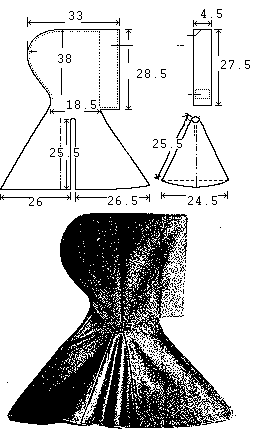

Some Clothing of the Middle Ages - Hoods- Sunnfjord Hood, by I. Marc Carlson,
Copyright 1996, 1997.
This code is given for the free exchange of information, provided the Author's Name is
included in all future revisions, and no money change hands-